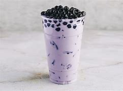

| Milk Tea | Flavor Description | Picture |
|---|---|---|
| Classic Milk Tea | A traditional black tea mixed with milk and sweetener. It has a smooth, creamy taste. | |
| Taro Milk Tea | A purple root vegetable mixed with milk and sweetener. It has a unique nutty and slightly sweet taste. |  |
| Matcha Milk Tea | A Japanese green tea mixed with milk and sweetener. It has a slightly bitter and earthy taste. | |
| Brown Sugar Milk Tea | A black tea mixed with brown sugar syrup and milk. It has a sweet and caramel-like taste. | |
| Hokkaido Milk Tea | A Japanese milk tea made with Hokkaido milk, which is known for its rich and creamy taste. |